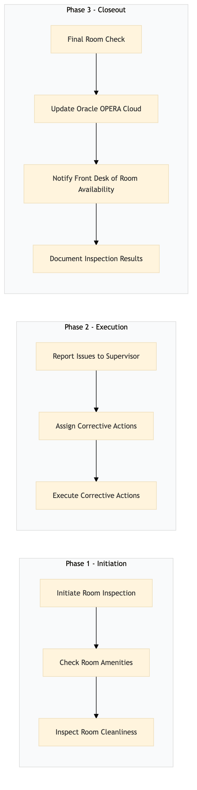

| Role | Steps |
|---|---|
| Housekeeper | 1.1 1.2 1.3 2.3 3.1 3.2 3.3 3.4 |
| Supervisor | 2.1 2.2 |
| Step | Name | Role | System | Input | Output | KPI | Dec? | Exc? | Pain Point / Risk |
|---|---|---|---|---|---|---|---|---|---|
| 1.1 | Initiate Room Inspection | Housekeeper | Oracle OPERA Cloud | Room assignment from Oracle OPERA Cloud | Inspection checklist | Less than 2 min | N | N | Accessing the correct room in a large hotel |
| 1.2 | Check Room Amenities | Housekeeper | Oracle OPERA Cloud | Inspection checklist | Updated inspection checklist with notes on amenities | Less than 5 min | N | Y | Missing or broken amenities |
| 1.3 | Inspect Room Cleanliness | Housekeeper | Oracle OPERA Cloud | Inspection checklist | Updated inspection checklist with notes on cleanliness | Less than 5 min | N | Y | Dirty or cluttered rooms |
| 2.1 | Report Issues to Supervisor | Housekeeper | Oracle OPERA Cloud | Updated inspection checklist | Issue report | Less than 3 min | N | Y | Communication delays with supervisors |
| 2.2 | Assign Corrective Actions | Supervisor | Oracle OPERA Cloud | Issue report | Corrective action plan | Less than 5 min | Y | N | Overlooking critical issues |
| 2.3 | Execute Corrective Actions | Housekeeper | Oracle OPERA Cloud | Corrective action plan | Completed tasks | Less than 10 min per task | N | Y | Inefficient execution of tasks |
| 3.1 | Final Room Check | Housekeeper | Oracle OPERA Cloud | Completed tasks | Final inspection checklist | Less than 5 min | N | Y | Negligent final checks |
| 3.2 | Update Oracle OPERA Cloud | Housekeeper | Oracle OPERA Cloud | Final inspection checklist | Updated room status in Oracle OPERA Cloud | Less than 3 min | N | Y | Data entry errors |
| 3.3 | Notify Front Desk of Room Availability | Housekeeper | Oracle OPERA Cloud | Updated room status in Oracle OPERA Cloud | Notification to Front Desk | Less than 2 min | N | Y | Delayed notifications |
| 3.4 | Document Inspection Results | Housekeeper | Oracle OPERA Cloud | Final inspection checklist | Inspection report | Less than 5 min | N | Y | Incomplete documentation |
The HK-GC-04 process involves a detailed room inspection and quality check to ensure guest satisfaction and hotel standards are met. This process is initiated by housekeeping staff and executed using Oracle OPERA Cloud PMS, with outcomes including documented issues and corrective actions.